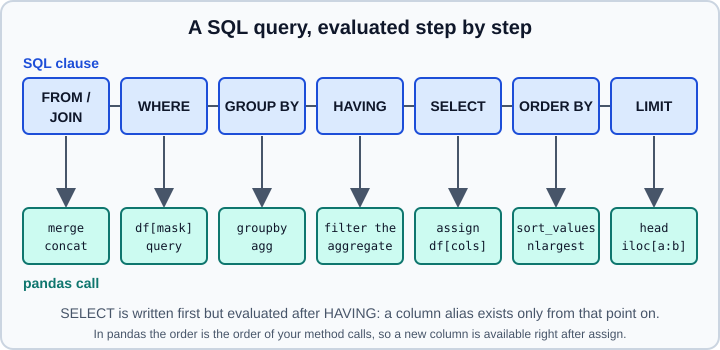

Coming from SQL
|
This content was generated with the assistance of AI and should be verified against the official documentation before being relied on in production. |
If you think in SQL, you already know most of what pandas does: a DataFrame is a table, a column is a Series, a query is a chain of operations. This page maps each SQL construct to its pandas 3.1 counterpart, shows both side by side, and spends most of its time on the places where the models differ and silently give different answers: missing values, row counts, join keys and ordering. It follows the official "Comparison with SQL" guide, but uses a small in-code dataset instead of a download, and every example was run on Python 3.13 with pandas 3.1.0 (checked in October 2026); the output shown is real.
For the SQL side of each example see the SQL pages of this site: Querying Data (SELECT), Aggregate and Window Functions and Modifying Data. Reading from and writing to real databases is covered in SQL Databases; the tool choice between pandas, Polars, DuckDB and the database itself is in Choosing Tools & Learning Path.
The mental model
A SQL query is declarative: you describe the result and the engine decides how to compute it. A pandas program is imperative: you call one operation after another and each returns a new object. The logical order in which a database evaluates a query is the order in which you will usually write the pandas calls.

Four differences cause most surprises:
-
Rows have an order and an index. A table has no inherent order; a DataFrame does, and every row carries a label that survives filtering and sorting. Use
reset_index(drop=True)when you want fresh positions. -
Most operations return a new object. Assign the result (
df = df.sort_values("col")). Theinplace=argument is deprecated in pandas 3.1 fordrop,rename,reset_index,set_index,dropna,drop_duplicates,sort_values,sort_index,evalandquery; do not use it in new code. -
There is no query optimiser. Each call runs eagerly, in the order you wrote it. Filter before you join, and select only the columns you need.
-
Missing is
NaN, notNULL, with different semantics (see below).
The dataset
Everything below uses a small restaurant table, defined in code so that the examples are self-contained. It has the shape
of the tips dataset used by the official guide:
import numpy as np
import pandas as pd
tips = pd.DataFrame({
"total_bill": [16.99, 10.34, 21.01, 23.68, 24.59, 25.29, 8.77, 26.88, 15.04, 14.78, 35.26, 18.43],
"tip": [1.01, 1.66, 3.50, 3.31, 3.61, 4.71, 2.00, 3.12, 1.96, 3.23, 5.00, 3.00],
"sex": ["F", "M", "M", "M", "F", "M", "M", "M", "M", "M", "F", "M"],
"smoker": ["No", "No", "No", "No", "No", "No", "No", "No", "Yes", "Yes", "Yes", "No"],
"day": ["Sun", "Sun", "Sun", "Sun", "Sun", "Sun", "Sun", "Sun", "Sat", "Sat", "Sat", "Sat"],
"time": ["Dinner"] * 8 + ["Lunch", "Dinner", "Dinner", "Lunch"],
"size": [2, 3, 3, 2, 4, 4, 2, 4, 2, 2, 5, 3],
})Source: pandas documentation, Comparison
with SQL (the original loads the 244-row tips file from the pandas test data).
SELECT
Choose columns with a list inside the brackets; calculate new ones with assign, which returns a new frame and leaves
the original untouched:
| SQL | pandas |
|---|---|
|
|
|
|
print(tips[["total_bill", "tip", "smoker", "time"]].head(3))
print(tips.assign(tip_rate=tips["tip"] / tips["total_bill"]).round({"tip_rate": 3}).head(3)) total_bill tip smoker time
0 16.99 1.01 No Dinner
1 10.34 1.66 No Dinner
2 21.01 3.50 No Dinner
total_bill tip sex smoker day time size tip_rate
0 16.99 1.01 F No Sun Dinner 2 0.059
1 10.34 1.66 M No Sun Dinner 3 0.161
2 21.01 3.50 M No Sun Dinner 3 0.167In pandas 3 a column expression can replace the repeated frame name:
tips.assign(tip_rate=pd.col("tip") / pd.col("total_bill")) (see
pd.col, Select & Filter).
WHERE
A comparison gives a boolean Series; indexing a frame with it keeps the True rows. Combine conditions with & for AND,
| for OR and ~ for NOT. Every comparison needs its own parentheses, because the bitwise operators bind tighter
than > and ==. The keywords and, or and not do not work on Series.
| SQL | pandas |
|---|---|
|
|
|
|
|
|
|
|
|
|
|
|
|
|
print(tips[tips["total_bill"] > 25])
print(tips[(tips["time"] == "Dinner") & (tips["tip"] > 4)])
print(tips[(tips["size"] >= 5) | (tips["total_bill"] > 25)]) total_bill tip sex smoker day time size
5 25.29 4.71 M No Sun Dinner 4
7 26.88 3.12 M No Sun Dinner 4
10 35.26 5.00 F Yes Sat Dinner 5
total_bill tip sex smoker day time size
5 25.29 4.71 M No Sun Dinner 4
10 35.26 5.00 F Yes Sat Dinner 5
total_bill tip sex smoker day time size
5 25.29 4.71 M No Sun Dinner 4
7 26.88 3.12 M No Sun Dinner 4
10 35.26 5.00 F Yes Sat Dinner 5Note that the row labels (5, 7, 10) are kept. query offers a SQL-like string syntax that avoids repeating the frame name
(tips.query("time == 'Dinner' and tip > 4")); it also accepts a reference to a Python variable with @name.
Source: pandas documentation, Comparison with SQL: WHERE. More in Indexing & Selecting.
NULL and NaN
SQL uses three-valued logic: any comparison with NULL is unknown, and WHERE keeps only the rows where the predicate is
true. pandas uses NaN (and NaT, and pd.NA in the nullable dtypes), and an ordinary comparison simply gives False.
The functions to know are isna and notna:
| SQL | pandas |
|---|---|
|
|
|
|
|
|
frame = pd.DataFrame({"col1": ["A", "B", np.nan, "C", "D"], "col2": ["F", np.nan, "G", "H", "I"]})
print(frame[frame["col2"].isna()])
print(frame[frame["col1"].notna()])
print((frame["col1"] == "A").tolist())
print((frame["col1"] != "A").tolist()) col1 col2
1 B NaN
col1 col2
0 A F
1 B NaN
3 C H
4 D I
[True, False, False, False, False]
[False, True, True, True, True]The last line is the trap: frame["col1"] != "A" is True for the row whose col1 is missing, whereas in SQL neither
col1 = 'A' nor col1 <> 'A' is true for a NULL, so such a row is never returned. If you port a query that relies on
three-valued logic, test notna() explicitly.
Other places where missing values behave differently:
-
Aggregates. SQL’s
SUMof no non-null values isNULL; pandas returns 0 unless you passmin_count=1(pd.Series([np.nan]).sum()is0.0, withmin_count=1it isNaN). -
Group keys. A
GROUP BYproduces a group forNULL;groupbydrops missing keys unless you passdropna=False. -
Sorting.
ORDER BYplacesNULLfirst or last depending on the engine;sort_valuesputs missing values last by default and takesna_position="first". -
Join keys. Two
NULLkeys never match in SQL; twoNaNkeys do match in a pandas merge (shown below).
The details of missing data in pandas, including Kleene logic in the nullable dtypes, are in Missing Data and Nullable Dtypes.
ORDER BY, LIMIT, OFFSET and DISTINCT
| SQL | pandas |
|---|---|
|
|
|
|
|
|
|
|
|
|
|
|
print(tips.sort_values(["day", "total_bill"], ascending=[True, False])[["day", "total_bill"]].head(4))
print(tips.nlargest(5 + 3, columns="tip").tail(3)[["tip"]]) # ORDER BY tip DESC LIMIT 3 OFFSET 5
print(tips[["sex", "smoker"]].drop_duplicates())
print(tips["day"].nunique()) day total_bill
10 Sat 35.26
11 Sat 18.43
8 Sat 15.04
9 Sat 14.78
tip
9 3.23
7 3.12
11 3.00
sex smoker
0 F No
1 M No
8 M Yes
10 F Yes
2nlargest and nsmallest are faster than a full sort when you only need the top few. Remember that the default sorting algorithm of sort_values is not guaranteed to
be stable on a single column; pass kind="stable" when ties must keep their original order.
GROUP BY and HAVING
groupby splits the rows, an aggregation reduces each group and the group keys become the index of the result. The
distinction between size and count is the classic stumbling block: size() counts rows, including those with
missing values, like COUNT(*); count() counts the non-missing values of each column, like COUNT(column).
print(tips.groupby("sex").size()) # COUNT(*) ... GROUP BY sex
print(tips.groupby("sex").count().iloc[:, :2]) # COUNT(col) for every column
print(tips.groupby(["smoker", "day"]).agg(n=("tip", "size"), avg_tip=("tip", "mean")).round(2))sex
F 3
M 9
dtype: int64
total_bill tip
sex
F 3 3
M 9 9
n avg_tip
smoker day
No Sat 1 3.00
Sun 8 2.86
Yes Sat 3 3.40Source: pandas documentation, Comparison with SQL: GROUP BY. More in GroupBy.
The last call uses named aggregation, result_name=("column", "function"), which is the clearest equivalent of
SELECT COUNT(*) AS n, AVG(tip) AS avg_tip. The dictionary form agg({"tip": ["size", "mean"]}) also works but
produces two-level column labels.
pandas has no HAVING keyword: filter the aggregated frame afterwards, either with a boolean mask or with query:
res = tips.groupby("day").agg(n=("tip", "size"), avg_tip=("tip", "mean"))
print(res[res["n"] > 5])
print(res.query("n > 5")) # the same, SQL-like n avg_tip
day
Sun 8 2.865
n avg_tip
day
Sun 8 2.865Both forms are the equivalent of GROUP BY day HAVING COUNT(*) > 5. When the filter must drop whole groups but keep
the original rows, use groupby(...).filter(func) instead.
Source: pandas documentation, Comparison with SQL: GROUP BY. More in GroupBy.
Window functions
SQL window functions compute a value per row from a group of rows, without collapsing them. In pandas the group is a
groupby object and the per-row operations are rank, cumcount, transform, shift and the cumulative and rolling
methods:
| SQL | pandas |
|---|---|
|
sort, then |
|
|
|
|
|
|
|
|
|
|
Top two bills per day, the usual "top N per group" query:
t = tips.sort_values("total_bill", ascending=False)
t["rn"] = t.groupby("day").cumcount() + 1 # ROW_NUMBER()
print(t.query("rn < 3")[["day", "total_bill", "rn"]])
t["rnk"] = t.groupby("day")["total_bill"].rank(method="min", ascending=False) # RANK()
print(t[["day", "total_bill", "rnk"]].head(3)) day total_bill rn
10 Sat 35.26 1
7 Sun 26.88 1
5 Sun 25.29 2
11 Sat 18.43 2
day total_bill rnk
10 Sat 35.26 1.0
7 Sun 26.88 1.0
5 Sun 25.29 2.0rank returns floats. The method argument decides ties: "min" gives tied rows the same rank and leaves gaps, like
SQL’s RANK(); "dense" leaves no gaps, like DENSE_RANK(); "first" breaks ties by position, like ROW_NUMBER().
Because pandas does not guarantee a row order inside a group unless you sorted first, always sort before cumcount,
shift or cumsum.
CASE WHEN
Use numpy.where for a two-way condition and numpy.select for several branches, evaluated in order like the WHEN
clauses of a CASE:
bill = tips["total_bill"]
print(np.where(bill < 15, "low", "high")[:4])
print(np.select([bill < 15, bill < 25], ["low", "mid"], default="high")[:4])['high' 'low' 'high' 'high']
['mid' 'low' 'mid' 'mid']Series.where(cond, other) keeps values where the condition is true, and Series.mask does the opposite; pd.cut and
pd.qcut turn a number into labelled bins.
Source: pandas
documentation, Comparison with spreadsheets: If-then logic (the same idiom as the SQL CASE).
JOIN
merge is the SQL join. Pass the key with on (same name on both sides) or left_on and right_on (different names),
and the join type with how. pandas 3.0 added the anti-joins, so the whole family is now available:
| SQL | how= |
Result |
|---|---|---|
|
|
Rows whose key is in both frames; left key order kept. |
|
|
All left rows; missing right values are |
|
|
All right rows. |
|
|
The union of keys, sorted lexicographically. |
|
|
The Cartesian product (no |
|
|
Left rows with no match on the right (new in 3.0). |
|
|
Right rows with no match on the left (new in 3.0). |
|
no |
Left rows that have a match, without duplicating them. |
customers = pd.DataFrame({"customer_id": [1, 2, 3, 4], "name": ["Ada", "Ben", "Cy", "Dee"]})
orders = pd.DataFrame({"order_id": [10, 11, 12, 13],
"customer_id": [1, 1, 3, 9],
"amount": [50.0, 20.0, 75.0, 5.0]})
for how in ["inner", "left", "right", "outer", "cross", "left_anti", "right_anti"]:
kw = {} if how == "cross" else {"on": "customer_id"}
print(how, customers.merge(orders, how=how, **kw).shape)
print(customers.merge(orders, on="customer_id", how="left"))inner (3, 4)
left (5, 4)
right (4, 4)
outer (6, 4)
cross (16, 5)
left_anti (2, 4)
right_anti (1, 4)
customer_id name order_id amount
0 1 Ada 10.0 50.0
1 1 Ada 11.0 20.0
2 2 Ben NaN NaN
3 3 Cy 12.0 75.0
4 4 Dee NaN NaNSource: pandas documentation, Comparison with SQL: JOIN and pandas.merge. More in Merge & Join.
Notice that order_id became a float: the missing values in a numeric column force NaN. Customer 1 appears twice,
because it has two orders; a one-to-many join multiplies rows exactly as in SQL.
In pandas 3.1.0 an anti-join returns the columns of both frames, with the columns of the second frame filled with
NaN. Pass only the key columns of the second frame to get a clean "customers without orders" result, or use isin:
print(customers.merge(orders[["customer_id"]], on="customer_id", how="left_anti")) # NOT EXISTS
print(customers[~customers["customer_id"].isin(orders["customer_id"])]) # the same with isin
print(customers[customers["customer_id"].isin(orders["customer_id"])]) # EXISTS (semi join) customer_id name
2 2 Ben
4 4 Dee
customer_id name
1 2 Ben
3 4 Dee
customer_id name
0 1 Ada
2 3 CySource: pandas documentation, Comparison with SQL: JOIN and pandas.merge. More in Merge & Join.
Four more options protect you from the silent mistakes of SQL joins:
-
validate="one_to_one"(or"one_to_many","many_to_one","many_to_many") raises aMergeErrorwhen the key uniqueness is not what you expect, which is how you catch an accidental fan-out. -
indicator=Trueadds a_mergecolumn withleft_only,right_onlyorboth, the quick way to audit what matched. -
suffixes=("_a", "_b")names the overlapping non-key columns (the default is_xand_y). -
left_onandright_onjoin columns with different names; both key columns are kept in the result.
Missing keys behave differently from SQL. In SQL a NULL never equals another NULL, so such rows do not join. In a pandas
merge two NaN keys match each other:
l = pd.DataFrame({"k": [1.0, np.nan], "left_val": ["x", "y"]})
r = pd.DataFrame({"k": [np.nan, 2.0], "right_val": ["p", "q"]})
print(l.merge(r, on="k")) # a SQL inner join would return no rows
try:
customers.merge(pd.concat([orders, orders]), on="customer_id", validate="one_to_one")
except Exception as exc:
print(type(exc).__name__, "-", str(exc).splitlines()[0]) k left_val right_val
0 NaN y p
MergeError - Merge keys are not unique in right dataset; not a one-to-one mergeDrop or fill missing keys before merging when the SQL semantics matter. DataFrame.join is a convenience wrapper that
joins on the index by default (left.join(right, how="left")).
Source: pandas documentation, Comparison with SQL: JOIN and pandas.merge. More in Merge & Join.
UNION, INTERSECT and EXCEPT
concat stacks frames (a UNION ALL); add drop_duplicates for a UNION. The other two set operations are merges:
x = pd.DataFrame({"a": [1, 2]})
y = pd.DataFrame({"a": [2, 3]})
print(pd.concat([x, y], ignore_index=True)["a"].tolist()) # UNION ALL
print(pd.concat([x, y]).drop_duplicates()["a"].tolist()) # UNION
print(x.merge(y, how="inner")["a"].tolist()) # INTERSECT: merges on all common columns
print(x.merge(y, how="left_anti")["a"].tolist()) # EXCEPT[1, 2, 2, 3]
[1, 2, 3]
[2]
[1]concat aligns columns by name and fills the ones missing in a frame with NaN, while a SQL UNION matches columns by
position, so reorder or rename columns first when porting.
Source: pandas documentation, Comparison with SQL: UNION. More in Concatenating Objects.
INSERT, UPDATE and DELETE
pandas is an analysis library, not a transactional store, and its answers to the data modification statements reflect
that. Always assign the result, and never grow a frame row by row: DataFrame.append was removed in pandas 2.0.
| SQL | pandas |
|---|---|
|
|
|
|
|
|
t2 = tips.copy()
t2.loc[t2["tip"] < 2, "tip"] *= 2 # UPDATE: one .loc call, rows and column together
print(t2["tip"].head(3).tolist())
t2 = t2.loc[t2["tip"] <= 4] # DELETE: keep what you want instead of dropping the rest
print(len(tips), len(t2))[2.02, 3.32, 3.5]
12 10For DELETE, keep the rows you want rather than dropping the rest, because the condition is then written exactly as in a
WHERE clause. The single .loc[rows, column] call matters: chained indexing such as tips[tips["tip"] < 2]["tip"] *= 2
changes a temporary copy and never the original, because Copy-on-Write is the only mode in pandas 3.
Source: pandas documentation, Comparison with SQL: UPDATE and DELETE.
Running SQL from pandas
You do not have to choose between the two. to_sql writes a frame to a table and read_sql_query runs a query and
returns a DataFrame; use a SQLAlchemy engine (the supported route for most databases) and a parameterised query rather
than string formatting:
import sqlalchemy as sa
engine = sa.create_engine("sqlite://") # in-memory SQLite
customers.to_sql("customers", engine, index=False)
orders.to_sql("orders", engine, index=False)
query = """
SELECT c.name, SUM(o.amount) AS total
FROM customers c JOIN orders o ON o.customer_id = c.customer_id
GROUP BY c.name ORDER BY total DESC
"""
print(pd.read_sql_query(query, engine))
print(pd.read_sql_query(sa.text("SELECT * FROM orders WHERE amount > :m"), engine, params={"m": 30})) name total
0 Cy 75.0
1 Ada 70.0
order_id customer_id amount
0 10 1 50.0
1 12 3 75.0Source: pandas.read_sql_query and DataFrame.to_sql. Connection strings, chunking and driver choices are in SQL Databases.
Two alternatives are worth knowing when you want to write SQL against data that is already in memory. DuckDB can query a
DataFrame by its variable name (duckdb.sql("SELECT day, AVG(tip) FROM tips GROUP BY day").df()) and is often much
faster on large frames; Polars offers a SQL context too. Both are compared in
Beyond the Core: Polars, Arrow, DuckDB & Deep Learning. The reverse advice also holds: for
filtering and joining tables that are far larger than memory, let the database do it and read only the result.
Quick reference
| You write in SQL | You write in pandas |
|---|---|
|
|
|
|
|
|
|
|
|
|
|
|
|
|
|
|
|
|
|
|
|
|
|
|
Where older tutorials are outdated
Many "pandas for SQL users" articles were written for pandas 0.2x and 1.x:
| Older advice | pandas 3.1 |
|---|---|
Add rows with |
Removed in 2.0; collect rows in a list and call |
Anti-joins need |
|
|
The default is |
|
Never worked reliably and does nothing in pandas 3; use |
|
Not faster, and deprecated in pandas 3.1. |